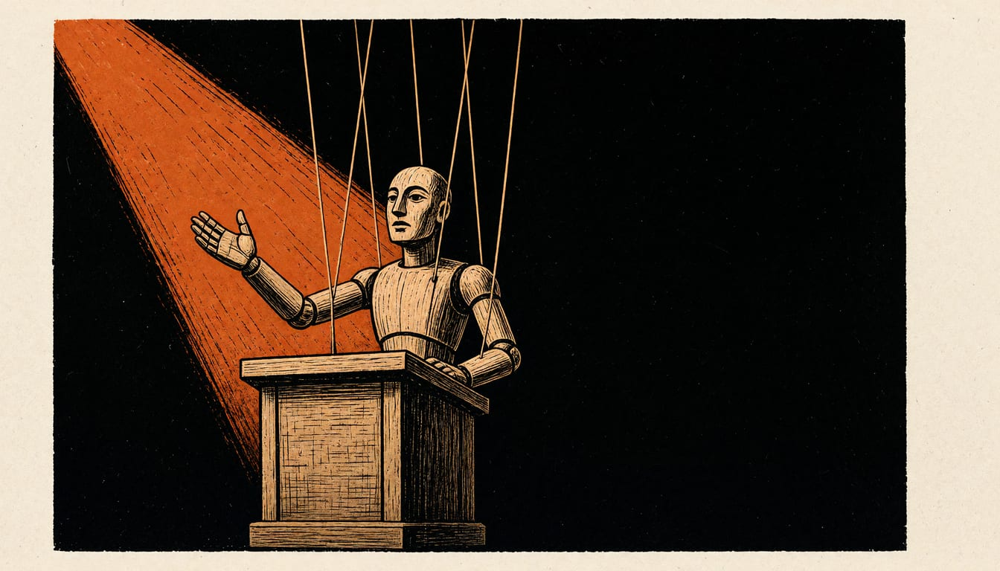

French minister accuses Mélenchon of speaking for the Kremlin over Donbas vote
Jean-Noël Barrot says the vote plan would merely repeat Putin's justification for the war, and rejects claims that aid to Ukraine is to blame for French purchasing-power problems.

France's foreign minister says Jean-Luc Mélenchon is now speaking for the Kremlin. Jean-Noël Barrot made the attack on RTL and Public Senat. He spoke after Mélenchon, leader of La France Insoumise, proposed a vote on the future of Donbas. Barrot called the act gravely serious, one of unprecedented gravity. He said, in his view, it disqualifies Mélenchon from the functions he aspires to.
The minister also turned on the money argument. Marine Le Pen and Jean-Luc Mélenchon tell the French that aid to Ukraine is behind their purchasing-power problems. Barrot called that claim unhealthy and said the orders of magnitude have nothing to do with each other. The cost, he said, is not carried by the French taxpayer. The money, he said, comes through the financing lever of the European Union.
Speaking at Le Bourget on Saturday, the La France Insoumise candidate said a peace deal could involve territorial concessions, especially in Donbas. He said he did not accept talk of a peace with territorial concessions in Ukraine without asking the people concerned whether they agree to fall on one side of the border or the other.
Barrot said Mélenchon had done no more than relay the justification Vladimir Putin gave for a colonial, imperialist, unjustified and unjustifiable war of aggression. The Kremlin, he said, tells heads of state and government around the world that Donbas is really Russian and that the war of aggression is a war to liberate Donbas. He pointed to the vote on Ukraine's independence 35 years ago. Donetsk and Luhansk backed it too: 83.9 percent and 83.86 percent of voters there said yes. In Donbas and Crimea, he said, people who sometimes speak Russian had said they wanted to be Ukrainian and independent.
Marguerite Cazeneuve asked: "Friends of the 'true left', between Putin and Zelensky, are you sure you are on the right side of history?" Kyiv officially refuses so far any concession on Donbas.